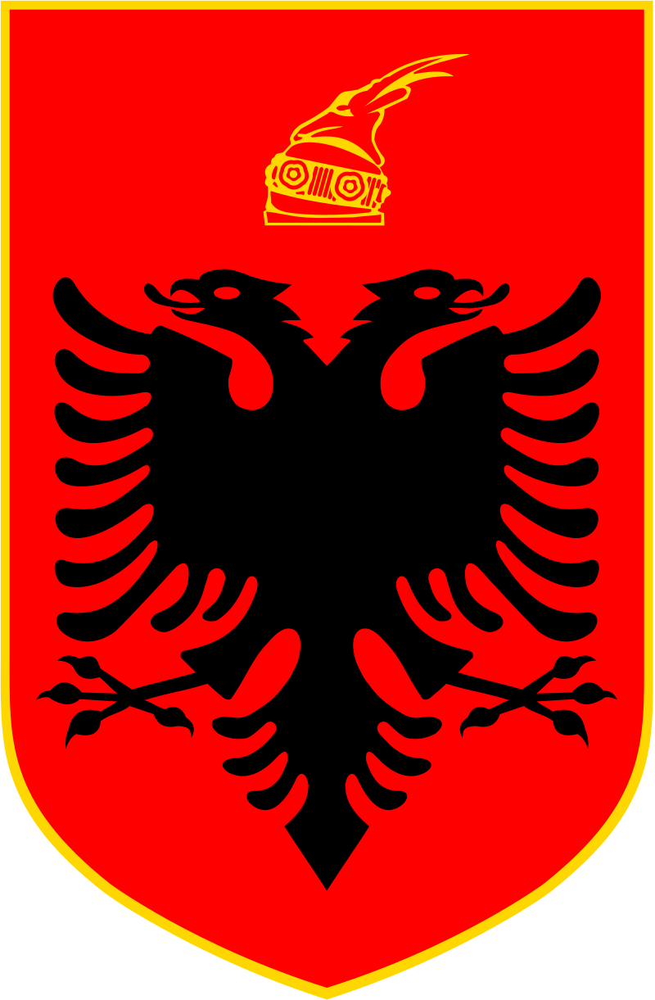
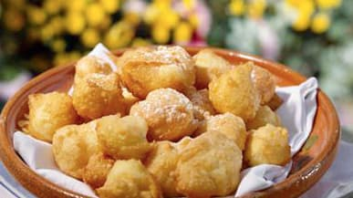

Petulla


This is a classic fried dough recipe of Albania, and bound to have more than anticpated! Enjoy it with powdered sugar or feta cheese and raspberry jam!
Ingredients
- Yeast: 2 teaspoons
- Water, warm: 1/4 cup
- Milk: 1 cup
- Eggs: 2
- Sugar: 1 tablespoon
- Salt: 1 pinch
- Vanilla: 1/2 teaspoon
- Flour: 2 1/2 cups
- Vegetable Oil
Steps
- Combine the water and yeast in a bowl and let sit for five minutes. Then add the remaining ingredients except for the flour and oil.
- Once combined, add in the flour in batches, mixing the dough in between. Once fully mixed, cover the bowl with a towel and let the dough rest for two hours.
- Fill a large pot halfway up with the vegetable oil and heat until it reaches 350°F.
- With a large spoon, scoop out some dough and drop it in the hot oil. Repeat until you have 4 to 6 dough balls in the pot and cook for 2 minutes on each side.
- Once nice and brown, remove and place on paper towels to let drain.